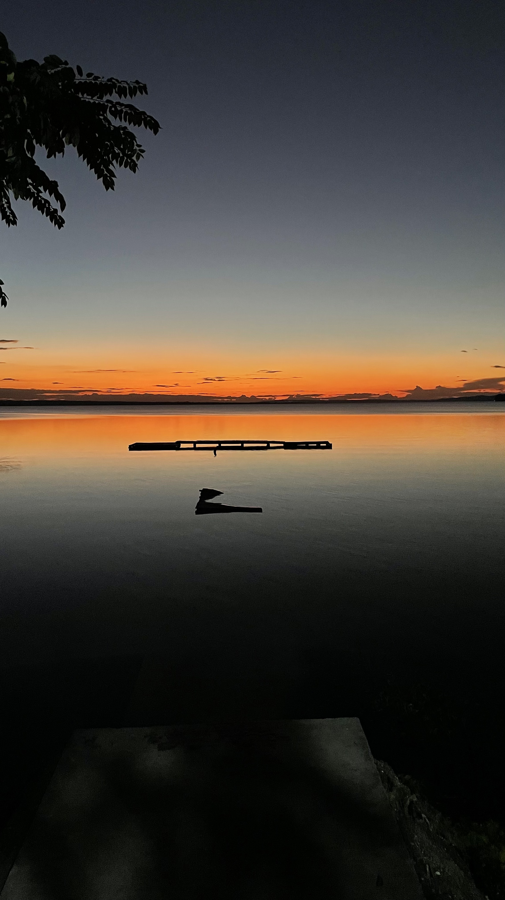
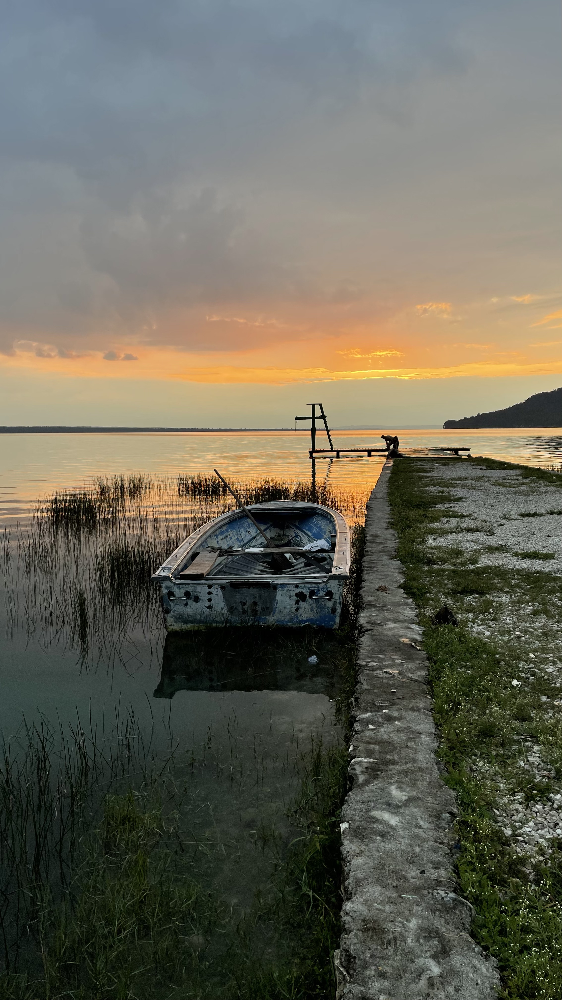
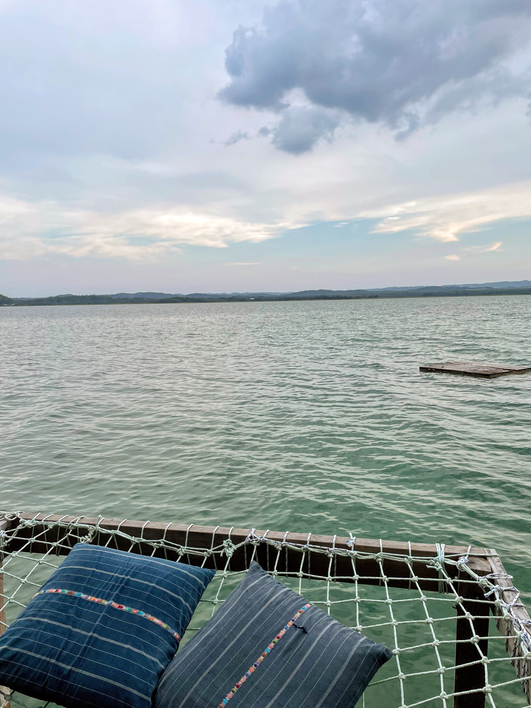

El Remate es un pueblo rural ubicado en el extremo oriental del lago Petén Itzá en Petén, Guatemala, Centroamérica.
El pueblo está ubicado en la Ruta 3, la única vía desde el pueblo de Flores hasta el principal sitio arqueológico Tikal y es una parada popular para los turistas.
Un sitio de ruinas mayas local mucho menos visitado es Ixlu. Los negocios en El Remate incluyen pequeños hoteles ecológicos, pequeños talleres que venden tallas de madera hechas a mano y paseos en bote por el lago. El Biotopo Protegido Cerro Cahuí es una reserva natural protegida que ofrece oportunidades de observación de aves.


